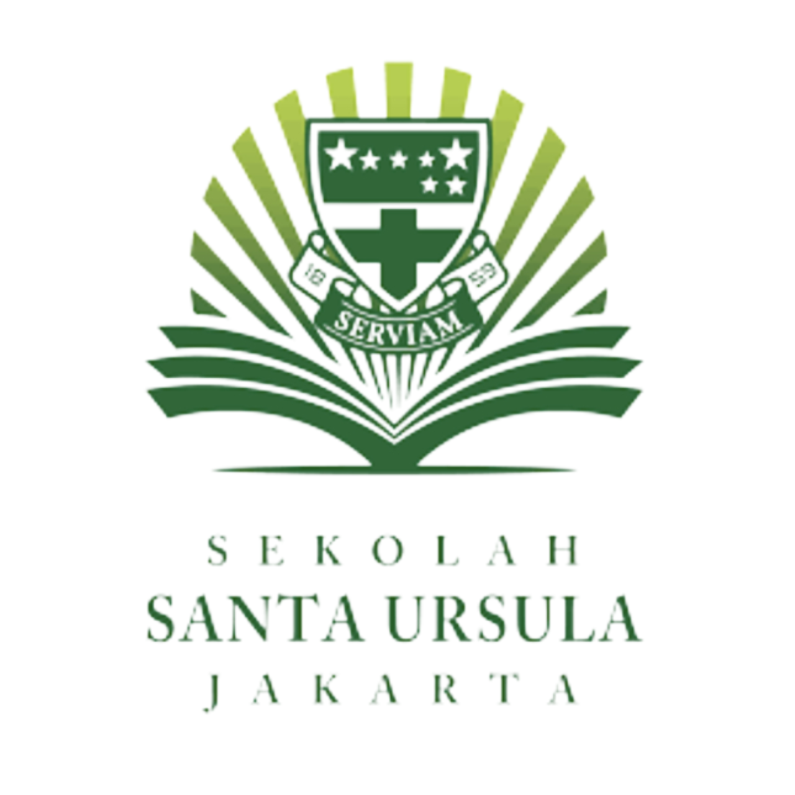

PEMANFAATAN SISA KULIT BUAH DAN SAYURAN SEBAGAI BAHAN PEMBUATAN SABUN ORGANIK BERBASIS TEKNOLOGI RAMAH LINGKUNGAN
Disusun untuk Memenuhi Salah Satu Tugas Integrated Learning
1. ABIGAIL KUSNADI (IX-1/2)
2. AMELIA HEIDI SETIAWAN (IX-1/6)
3. AUDREY NATHANIEL ANDALUSIA (IX-1/10)
4. KIMI NAWILIS (IX-1/29)
5. VALAREE SARDJONO (IX-1/36)
SEKOLAH MENENGAH PERTAMA SANTA URSULA
JALAN POS NOMOR 2 JAKARTA
2022/2023
|
KATA PENGANTAR Puji syukur kehadirat Tuhan Yang Maha Esa atas segala rahmat dan karunia-Nya yang dilimpahkan kepada peneliti sehingga peneliti dapat menyelesaikan karya ilmiah berjudul “PEMBUATAN SABUN SECARA BIOTEKNOLOGI MENGGUNAKAN EKOENZIM DALAM UPAYA PENGURANGAN SAMPAH RUMAH TANGGA”. Peneliti mengucapkan terima kasih kepada Bapak Elisa Tri Meistiawan, Bapak F. A. Dimas Andika W, Ibu Fransisca Wiwik Martasari, dan Ibu Yolanda Endear G. S, selaku guru IPA kelas IX, yang telah memberikan tugas ini untuk menambah wawasan serta pengalaman dan yang telah mendukung dan membantu kami selama tugas diberikan dan dilakukan. Laporan ini dibuat untuk memenuhi tugas proyek Integrated Learning (IL) yang mencangkup mata pelajaran Ilmu Pengetahuan Alam (IPA), Bahasa Inggris, Pendidikan Agama, dan Teknologi Informasi dan Komunikasi (TIK) dengan pokok utama produk teknologi ramah lingkungan. Tujuan laporan ini dilakukan untuk menambah wawasan tentang ekoenzim yang bermanfaat bagi lingkungan sekitar dan dapat membuat lingkungan sekitar menjadi lebih sehat. Peneliti mengakui bahwa kami adalah manusia yang tidak sempurna, masih kurang dalam berbagai hal. Oleh karena itu, tidak ada hal yang dapat peneliti selesaikan dengan sempurna. Begitu pula dengan karya ilmiah ini. Tidak semua hal bisa kami deskripsikan dengan baik dalam karya ilmiah ini. Maka dari itu, peneliti bersedia menerima berbagai kritik dan saran dari pembaca sebagai motivasi bagi peneliti untuk dapat berkembang, dan memperbaiki karya tulis peneliti selanjutnya. Dengan menyelesaikan karya tulis ini, peneliti berharap ada banyak manfaat yang dapat diperoleh. Semoga dengan adanya karya tulis ini, pembaca dapat menambah pengetahuan tentang bioteknologi, ekoenzim, dan sabun. |
|
ABSTRAK Allah menciptakan manusia dengan 3 keistimewaan yang membedakan manusia dengan ciptaan lainnya. Tiga keistimewaan itu adalah akal budi, hati nurani, dan kebebasan. Alam dan segala isinya sudah diciptakan oleh Allah agar dapat dimanfaatkan dengan baik oleh manusia. Manusia, yang sudah diberi 3 keistimewaan oleh Allah, seharusnya sudah bisa bertanggung jawab untuk menjaga lingkungan sekitar beserta kehidupan di dalamnya. Salah satu upaya yang bisa dilakukan manusia adalah dengan menjaga lingkungan agar terhindar dari pengaruh buruk sampah. Hal ini bisa dilakukan dengan mengumpulkan dan memanfaatkan sampah untuk diolah menjadi barang yang berguna bagi sesama. Ekoenzim merupakan hasil fermentasi dari gula merah, air, dan kulit buah dan sayuran yang saat ini menjadi topik yang ramai diperbincangkan karena ramah lingkungan. Selain untuk membuat hasil fermentasi yang dapat digunakan untuk membuat suatu benda/cairan yang bermanfaat, ekoenzim ini juga dapat mengurangi sampah rumah tangga yang ada di lingkungan sekitar. Penelitian ini bertujuan untuk mengurangi sampah yang ada pada lingkungan, yang kemudian diolah menjadi barang dapat bermanfaat bagi kehidupan. Pada penelitian ini, peneliti mencoba untuk membuat sabun dari ekoenzim untuk mengetahui dan merasakan manfaat dari ekoenzim pada kulit. Peneliti mengumpulkan sisa kulit buah dan sayuran yang ada untuk membuat sabun ini. Penelitian ini dilakukan pada bulan November-Desember 2022 di Laboratorium Biologi SMP Santa Ursula Jakarta. Penelitian ini menggunakan metode penelitian percobaan/eksperimen dan deskriptif analitis. Hasil analisis eksperimen dan percobaan yang telah dilakukan menunjukan hasil yang baik bagi kulit dan lingkungan. Sampah rumah tangga di lingkungan sekitar menjadi berkurang, peneliti pun dapat memanfaatkan kembali sampah tersebut menjadi benda yang berguna dalam kehidupan sehari-hari. God created humans with 3 characteristics that distinguish humans from other creatures. These three characteristics are reason (mind), conscience, and freedom. Nature and everything in it has been created by God so that it can be put to good use by humans. Humans who have been gifted with 3 characteristics/privilege by Allah must be able to be responsible for protecting the surrounding environment and life in it. One of the activities that can be done by humans is to protect the environment so as to avoid the bad effects of waste. This can be done by collecting and utilizing waste to be processed into goods that are useful for others. Eco-enzymes are fermented from brown sugar, water, and fruit and vegetable peels. Eco-enzyme is currently a hot topic of conversation because they are environmentally friendly. Besides being able to make fermented products that can be used to make useful objects/liquids, eco-enzyme can also reduce household waste in the surrounding environment. This research aims to reduce waste in the environment which is then processed into goods that can be beneficial to life. In this study the researchers tried to make environmentally friendly technology, namely soap from ecoenzymes, to find out and feel the benefits of ecoenzymes on the skin. Researchers collect leftover fruit and vegetable peels to make this soap. This research was conducted in November- December 2022 at the Santa Ursula Middle School Biology Laboratory, Jakarta. This research uses experimental/experimental research methods and analytical descriptive. The results of the analysis of experiments and trials that have been carried out show good results for the skin and the environment. Household waste in the surrounding environment is reduced, researchers can also reuse this waste into objects that are useful in everyday life. DAFTAR ISI |